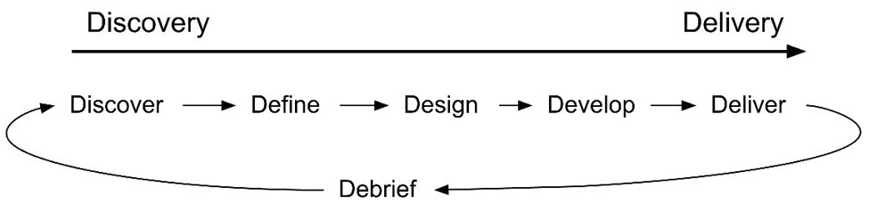
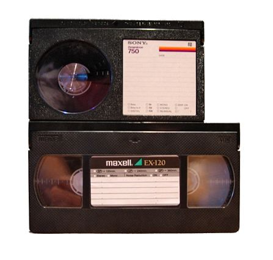

Chapter 2
If you ask five people what a product manager is, you might get six different answers.
Some people say a product manager is a mini-CEO. Others say they're the advocate for the customer. Some say they're the glue that holds the team together. Others say they're the conductor of an orchestra. Some people say they're responsible for strategy, while others focus on user research and execution.
Why so many answers? For one thing, the role is complex and multi-faceted. For another, the role really is different at different companies. Product management is a " whitespace" role—the PM is responsible for anything that isn't covered by other people. Some PMs work with dedicated researchers, data scientists, product marketers, and copy-writers, while others have none of those, or limited access to one.
Here's our answer to what a product manager is:
A PM is the person on a product team who is responsible for choosing the right problems to go after, defining what success looks like, and guiding their team to achieve successful outcomes.
They are responsible for the overall success of their product. It's a hugely influential role because the PM is the main person who decides what the product teams actually work on.
This role is all about outcomes , not output . To be a great PM, you can't just follow the steps; you need to reliably build and ship successful products.
One of the best ways to understand the PM role is in relation to the other roles at a company. As a PM, you work with many teammates who each have parts they're responsible for. You are responsible for making sure everyone's vision is aligned, all the parts fit together, and that nothing slips through the cracks. If there is a problem, it's your responsibility to—diplomatically—ensure it gets fixed. You must lead without authority, influencing people by using your vision, research, and analysis.
The core product team at most modern tech companies is called the triad : Engineer (or Tech Lead), Designer, and Product Manager.
There are many ways to divide work within the triad. The split can vary depending on each person's level of experience, time at the company, skills, interests, and how heavy their workload is. For example, a junior designer might expect the PM to entirely define the problem and constrain parts of the solution, while a senior designer might be very involved in shaping the problem. It's helpful to have a detailed discussion about this when you start working with new people to ensure there aren't any mismatched expectations.
On the best teams, the triad works together in a close partnership. All three are involved from the very beginning. They share context, give each other feedback, and problem-solve together. Many times, they all agree on a decision, but if not, they should trust each other enough to defer to the person who is most responsible for that problem. They help each other out.
The day-to-day work of a product manager varies over the course of the product life cycle. Modern product development doesn't follow a strict linear structure, but in order to understand the PM role, it's helpful to group activities by phase.
In reality, these phases will overlap, occur out of order, and happen in iterative cycles. Every company has its own version, but this is the general pattern: 1

PMs often have two streams of work going at a time: one closer to discovery, and one closer to delivery. 2 This helps ensure that when the engineers finish their current work, there's no gap while the PM figures out the next thing to work on.
Please note: determining key assumptions, creating hypotheses, and validating hypotheses occur during all stages.
Early on, the key hypotheses focus on the problem, customer needs, business needs, and market sizing. Later, the hypotheses center on the solution, usability, feasibility, and launch plans.
Imagine your VP stops you in the hall one day and tells you that you need to add "export to PDF" functionality to your product this quarter. It's a straightforward idea, but it will take a few weeks to build in the existing codebase. You put your team on it and launch it without bugs, but no one uses it. Your annual review comes around, and you're blamed for the flop—not the VP who actually gave the order.
What went wrong?
You skipped product discovery and took your VP's solution too literally. The better path would have been to dig deeper and understand the underlying problem that they were trying to solve.
This is a process called product discovery —when you figure out what problem you should go after.
All products start with an initial idea. It might be a problem you notice, a feature request, an underperforming metric, a new market to go after, or any number of other sources of inspiration. During discovery, you take that initial idea and expand your understanding of the customer's needs, problems, and goals.
You're looking for a problem that's large enough to be worth solving, while feasible enough for your team to be successful.
Many launches fail because the team focused on the wrong problems. They misunderstood critical details of what the customer had told them, the pain of the problem wasn't big enough to overcome inertia, or they missed the bigger picture and only solved part of the problem.

A great example of this was the VHS versus Betamax video recording format war during the 1970s. Betamax clearly had better picture quality, but it turned out customers cared more about affordability and being able to record a full 2-hour movie. Betamax only had 1 hour of recording time. Better product discovery could have steered Betamax in the right direction.
Common tasks during the product discovery phase include:
Discovery is the magic tool for reliably creating successful products. Without product discovery, you're just hoping that the first idea you came up with, or that your executive told you to build, is a good solution for an important customer problem.
Imagine that you've invested a lot of time in product discovery, and brought your whole team along to many customer visits. Everyone is feeling great about the customer problems. When you start working with the designer on the solution, however, there are disagreements. Your designer came up with a beautiful solution that would take six months to build and is insisting that cutting anything means you don't care about customers.
What went wrong?
What went wrong here is that you weren't clear enough during the define phase . You didn't get alignment on the scope of the problem and what success actually looks like. You might have assumed that you'd start by tackling a small part of the problem in the first release, but your designer didn't know that.
The define phase is when you narrow down the problem space to a specific, feasible slice, and frame it so it's ready for the team. You might have a hypothesis for a solution at this point, but it's just an illustration, not something you're committed to. During this phase, you'll be shaping the outcomes you're going after, and outlining the big picture so your team understands where this project fits in.
Common tasks during the define phase include:
The culmination of the define phase is often some kind of review where the team gets the go-ahead for the work and people are assigned to the team.
Imagine your team is ready to start working on a well-defined problem of getting user photos during the sign-up flow, and your designer quickly sketches up a solution. It looks good, so, you give the go-ahead and the team builds it. Unfortunately, customers are confused by the flow and keep writing in to customer support. You realize a different approach is needed, and you rewrite the whole thing. What went wrong?
What went wrong in this scenario is that you didn't consider multiple solutions and test paper prototypes during the design phase .
The design phase is not just about putting your ideas into pictures; it also includes expansive thinking and validating your ideas with real people. This includes both the user experience (e.g., mock-ups and visual prototypes) and the technical solution (design docs and technical prototypes).
Common tasks during the design phase include:
Design activities usually start a bit before the develop stage , but for larger projects, they tend to overlap. For example, engineers might be implementing one part of the solution while the designer continues to work on another part. Or, the engineers will prototype a basic design and then work hand-in-hand with the designer to figure out how it should look and behave.
Development is where you turn the ideas into working code. Depending on the team, the PM may have a lot of project management responsibilities during this phase, or the tech lead might take that on. In either case, surprises will inevitably come up and the PM will need to handle them to keep the team on track.
Common tasks during the develop phase include:
The more responsive you can be to your team, the faster they'll be able to build the product.
Delivery is where you roll out the solution to users. Some changes are quietly shipped without any fanfare, while others have a full go-to-market campaign.
A lot can go wrong during delivery, and it's up to the PM to make sure it doesn't. You don't want to find out that your product is buggy and takes down the servers on launch day. You don't want to surprise the sales and support teams with changes that they can't explain to customers. And you don't want to send out an email to thousands of people telling them to download an app that's not available in the app store yet (been there!).
Common tasks during the deliver phase include:
Product delivery requires a lot of coordination and risk mitigation. Successful launches are a collaboration between product, infrastructure, marketing, operations, and many more departments.
While many people are eager to move on to the next new thing as soon as the product launches, it's not over yet. After the launch, it's important to measure how it went and learn from the project. Often, insights from the launch will drive the next round of product innovation.
Common tasks during the debrief phase include:
The time and energy you put into debriefing will help you grow as a PM and build your credibility.
Beyond developing products, PMs are also expected to invest in their own personal growth and contribute to the rest of the PM team and company.
These tasks might include:
How do I become a great product manager?
Great product managers are those who reliably ship great products. Early in your career, you can get credit for developing your skills and showing potential, but eventually, your greatness will be measured by the impact of the products you ship. 4
Luckily, to ship great products, you don't need to be a creative genius who's struck by inspiration in the shower.
There are a lot of reliable frameworks and best practices that will improve your chances of shipping a successful product. The frameworks won't transform you into a great product manager overnight or guarantee that your products never fail, but they'll help you avoid the most common problems and give you some structure to start experimenting, reflecting, and improving. They are not a replacement for good judgment.
Becoming a great product manager can take years of practice and experience.
At first, you might feel like there are so many frameworks and best practices that it's impossible to know which one would be helpful at any given time. You might get caught up in the surface-level trappings of finding the right template or using the best agile methodology. It will take a lot of time to run your team because you won't have the intuition on what steps can be skipped, or how to quickly get people on board with a plan. You'll catch some problems in later parts of development when they're more expensive to fix. Sometimes, product leadership will throw a wrench in things and require massive changes.
You might misunderstand part of the customer problem, or mess up part of the execution, causing the launch to miss its goals.
Over time, you'll build up strong mental representations that help you quickly identify the right approach to any given problem.
You'll find that the PM work for each feature takes a lot less time as you hone in on the key pieces of work and need fewer iterations. You'll notice problems earlier, and learn to validate ideas to improve the quality and speed of your launches. You'll start to accurately predict what product leadership cares about, and learn to show your work early to avoid wasted work. You'll get better at digging deep into customer problems and executing smoothly, and you will hit your launch goals.
Then, when you feel like you can launch features with your eyes closed, your role will change and you'll be a beginner again.
You'll be expected to take on more strategic responsibilities. It will feel like you need to prioritize apples against oranges while predicting the future of the fruit market. You'll be taking on multiple projects at once, many of which will require significant tradeoffs. There will be no way of pleasing all the stakeholders. People will ask for roadmaps and visions. With your team being asked to sign-up for absurdly ambitious goals, you'll wonder how you'll possibly find the time for everything.
You can make it through that adjustment period by getting comfortable with ambiguity, tough problems, and tradeoffs. You'll come to understand the company's business strategy and drive product strategy from it. Projects will take less of your time as you learn to empower the members of your team and earn the trust to take shortcuts. Stakeholders will feel like you understand them, so they'll be okay with the tradeoffs you have to make. You'll remove ego from the equation, and become okay with submitting work that's below your regular quality standards in order to make more time for strategy and vision. You'll figure out what it would take to make a significant impact, and drive conversations on the best path to follow.
Around this time, you'll start to feel like a great product manager.
You can relax and enjoy your success, or take another leap into leadership roles. Good Luck!
1 . These phases expand upon the UK Design Council's "Double Diamond" model: https://www.designcouncil.org.uk/news-opinion/what-framework-innovation-design-councils-evolved-double-diamond
2 . Marty Cagan calls this " Continuous Discovery and Delivery" or " Dual Track Agile": https://svpg.com/continuous-discovery/
3 . A design sprint is a great step-by-step process for pulling together all of the pieces of discovery: https://www.gv.com/sprint/
4 . There's no scientific way to separate the impact of a PM from the strength of the rest of the team. In practice, managers give a lot of weight to peer reviews to understand how much the PM contributed to the results.